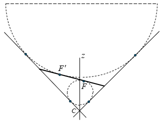
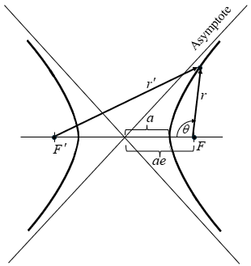

Commonality
Shared geometry and physics across conic types
Sits between the Framework page and the individual conic pages. Establishes the shared geometric and physical machinery before Elliptical, Hyperbolic, and Parabolic branch off into their specific derivations.
Dandelin Spheres
A Dandelin sphere is a sphere inscribed inside a cone so that it is tangent both to the conical surface and to a plane that cuts the cone. The construction was introduced in 1822 by the Belgian mathematician Germinal Pierre Dandelin. The point where a Dandelin sphere touches the cutting plane is a focus of the conic section formed by that cut.
For the elliptical case, two Dandelin spheres sit in the same nappe of the cone, one above the cutting plane and one below, tangent to the plane at the ellipse's two foci (the smaller sphere, nearer the apex, at the primary focus; the larger sphere at the empty focus). For the parabolic case, the cutting plane is parallel to a generator of the cone, and a single Dandelin sphere is tangent at the parabola's one focus. For the hyperbolic case, the cutting plane crosses both nappes, and a Dandelin sphere in each nappe is tangent at one of the two branches' foci.
Doug's note on the geometry: for a Dandelin sphere tangent to the orbit plane at focus F, the segment from the sphere's center to F is perpendicular to the orbit plane (that's just what tangency to a plane means). But the cone's apex is not, in general, on that same perpendicular line, because the cone's axis is tilted relative to the orbit-plane normal for every non-circular conic (that tilt is what produces the eccentricity in the first place). The two lines, sphere-center-to-focus and apex-to-focus, only coincide in the degenerate circular case. This distinction matters for the framework's own derivations, which build the cone from the apex outward rather than from the sphere inward.
Resolved: apex-to-focus vs. the cone's axis. The apparent conflict with the elliptical focal-point construction (AAS 05-354) traced back to conflating two different lines through the apex. OF, the segment from apex to focus used in the Bridge Relation, runs along h and is perpendicular to the orbital plane. The cone's axis, the line from the apex through the centers of its circular cross-sections (and so through the Dandelin sphere's center), is a separate line, tilted relative to h except in the circular case, matching the note above. Since these are two distinct segments from the same apex point rather than one line playing both roles, the sphere-tangency derivation of F and the OF-perpendicular derivation of F are both valid and don't conflict.

The smaller Dandelin sphere, near the apex C, is tangent to the cutting plane at the near focus F. The larger sphere, farther from the apex, is tangent at the far focus F′; only its upper cap is drawn, since the rest of the sphere touches neither the cone nor the cutting plane and adds no geometric content. No separate parabolic figure is needed here: the three-orbit composite on the Framework page already shows that case.
Transition
The Dandelin sphere construction is a purely geometric statement about cones and planes; it doesn't yet involve gravity, orbital dynamics, or time. The sections that follow build the bridge from this static geometric picture to the physical, time-dependent orbital problem: the three-level hierarchy (below), the bridge relation connecting the cone to the orbit (below), the Gauss's law / flux argument, and the calculus derivation template each individual conic page follows.
Three-Level Hierarchy
The framework nests three coordinate structures inside one another, each more specific than the last.
Level 1: Spherical. The primary body sits at the center of a spherical coordinate system. For purely radial motion this is sufficient on its own. Orbital motion, however, has angular momentum, so the trajectory never approaches the origin, and the three-dimensional structure of the satellite's interaction with the gravitational field becomes relevant. This is the setting in which Gauss's law is stated most simply.
Level 2: Conical. A right circular cone is embedded within the spherical frame, apex displaced from the primary body along the angular momentum vector h. The cone's own local coordinates (the half-angle \(\Phi_c\), the angle \(\Phi_h\) between the cone axis and line OF, and the Dandelin-type contact length \(\rho\)) describe the cone itself, independent of any particular satellite position. Table F-1 (Framework page) gives these for all three conic types. For the elliptical case, both \(\Phi_c\) and the apex angle are fixed: \(\Phi_c = \pi/4\), and \(\Phi_h\) carries the eccentricity dependence through \(\sin(2\Phi_h) = e\). For the hyperbolic case, Table F-1 gives \(\cos(\Phi_c) = 1/e\), with \(\Phi_h = \pi/2\) fixed instead, the mirror image of the elliptical row, where \(\Phi_c\) is fixed and \(\Phi_h\) carries the eccentricity. This role-swap is what makes \(\Phi_c\) a consistent axis-to-generator definition across conic types rather than two different angles that happen to share a name (derivation stays on the Hyperbolic page, per the convention of keeping derivations local to individual pages).
Level 3: Orbital. The satellite's actual position, r, \(\theta\), and its slant-distance and axis-perpendicular coordinates R and R′ within the cone, lives at this innermost level. This is where the classical two-body orbit (periapsis, apoapsis, true anomaly) is actually described, and where the cone's fixed geometry from Level 2 gets tied to the moving satellite.
Each level constrains the one inside it without needing to know the details of what's inside: the spherical field doesn't care about the cone's half-angle, and the cone's half-angle doesn't care about where on the orbit the satellite currently is. The bridge relation below is what connects Level 2's fixed cone geometry to Level 3's moving satellite.
A note on idealization. The right-angle apex construction used here (\(\Phi_c = \pi/4\) for the ellipse and, by definition, for the parabola) is not the general cone-cutting geometry familiar from Dandelin's classical construction, where the apex half-angle is arbitrary and the cutting plane's tilt is what varies instead. It's a deliberate choice, made so that all three conic types share one comparable cone geometry rather than each having its own free apex angle: the cone in this framework is a mathematical device for unifying the three orbit types, not a claim about a physically privileged cone angle.
The Bridge Relation (Elliptical)
With the cone apex angle fixed at 90° (\(\Phi_c = \pi/4\)), the edge-view derivation gives OF, the perpendicular distance from the apex to the orbital plane, as
Because OF is perpendicular to the entire orbital plane, not just to one point in it, it is perpendicular to the radius vector r for every satellite position. The triangle formed by the apex, focus F, and the satellite is therefore a right triangle at every point on the orbit, with legs OF = \(\sqrt{ap}\) and r, and hypotenuse R (the slant distance from apex to satellite):
R′, the component of R perpendicular to the cone's z-axis (rather than to the orbital plane), follows as a corollary. At the 90° apex angle, R′ = R/\(\sqrt{2}\), giving
Both relations hold at every point on the orbit: r and R both vary as the satellite moves, but ap is fixed for a given orbit, playing the same role as a geometric constant that the specific mechanical energy \(-\mu/(2a)\) plays as a physical constant.
Status for the other conic types. This is confirmed for the elliptical case only. The hyperbolic and parabolic pages are less developed, and a more general form of this relation, \(R^{2} = r^{2} + 2a(r - p) + R'^{2}\), has appeared in earlier framework notes without a matching derivation confirming it across all three conic types. Given that \(\Phi_c\) and \(\Phi_h\) swap roles between the elliptical and hyperbolic cases (Table F-1), the bridge relation should not be assumed to carry over unmodified; it needs to be re-derived from each type's own edge-view geometry once those pages mature, the same way \(\rho\) took a different closed form (\(\sqrt{ap}\), \(p\), \(ae/\sqrt{e^{2}-1}\)) in each case while keeping the same geometric role.
[OPEN, no direction set] Carried forward as-is; no resolution attempted yet.
Gauss's Law / Flux Argument
Gauss's law for gravitation states that the total outward gravitational flux through any closed surface equals \(-4\pi\mu\), where \(\mu = GM\) is the gravitational parameter of the enclosed mass. For a sphere of radius R centered on the primary body, the field magnitude is \(\mu/R^{2}\) and the surface area is \(4\pi R^{2}\), so the integrand is constant and the \(R^{2}\) factors cancel identically. The flux is \(-4\pi\mu\) regardless of the sphere's size.
Three properties of this cancellation carry directly into the conical framework:
- Enclosure, not position, is what matters. The theorem places no constraint on where within the surface the mass sits, only that it's enclosed. For the two-body problem, the primary body at focus F remains enclosed for every satellite position, so the flux argument holds across the full range of eccentricity without modification.
- Shape doesn't matter, only solid angle. Because the \(R^{2}\) factors cancel, flux depends only on the solid angle a surface subtends, not on its particular shape or size. A spherical cap of half-angle \(\Phi\) subtends solid angle \(\Omega = 2\pi(1 - \cos\Phi)\) and carries flux \(-\mu\Omega\), independent of radius. A flat disk subtending the same solid angle carries the same flux. This is what licenses replacing curved surfaces with flat ones, or evaluating a surface in sections, without needing a fully closed surface at every step.
- The conic sector's flux is constant. Since flux lines follow the radial generators of the cone, and the \(R^{2}\) cancellation holds at every radius, a conic sector of fixed half-angle subtends a fixed solid angle regardless of how far along the generator you measure. The flux through that sector therefore stays constant as the satellite moves along its orbit, even though R itself is changing.
That last point is the one that does the real work: it converts a purely geometric fact (the cone's half-angle is fixed) into a conserved physical quantity (flux through the sector), and it's what lets the framework connect the static cone geometry from the Three-Level Hierarchy to the satellite's actual time-dependent motion. How that constant flux gets used (recovering Kepler's equation, deriving a logarithmic time variable, or building a numerical positioning scheme) is specific to each conic type and is developed in the individual orbit pages rather than here.
Calculus Derivation Template
The Gauss's law argument above establishes why a conic sector carries constant flux as the satellite moves along its orbit. This section's purpose is narrower and more mechanical: to show that a single equation, the vis-viva relation combined with conservation of angular momentum, is universal across all three orbit types, and derives every conic's motion equation from the same starting point rather than needing a separate energy argument for each.
Specific mechanical energy is constant along the orbit:
\[ \frac{v^{2}}{2} - \frac{\mu}{r} = \mathcal{E} \]
and angular momentum \(h = r^{2}\dot\theta\) is related to the semi-latus rectum by \(h = \sqrt{\mu p}\), so the tangential component of velocity satisfies \(r^{2}\dot\theta^{2} = \mu p / r^{2}\). Subtracting this from \(v^{2} = \dot r^{2} + r^{2}\dot\theta^{2}\) and substituting the energy equation isolates \(\dot r^{2}\):
The \(\pm\) here is not a free choice, it tracks the sign of the total energy row in Table C-1 directly: minus for the elliptical case (\(\mathcal{E} = -\mu/2a\)), plus for the hyperbolic case (\(\mathcal{E} = +\mu/2a\)). Multiplying through by \(2a/\mu\), then by \(r^{2}\), then taking the square root and separating variables turns this into an integrable form:
\[ \dot{r}^{2} = \left(\frac{2a}{r} - \frac{ap}{r^{2}} \pm 1\right)\frac{\mu}{a} \]
\[ r^{2}\dot{r}^{2} = \left(2ar - ap \pm r^{2}\right)\frac{\mu}{a} \]
\[ \frac{r\dot{r}}{\sqrt{2ar - ap \pm r^{2}}} = \sqrt{\frac{\mu}{a}} \]
Eq. (C-5) is the template: one integral, general across conic type, that each individual conic page carries out with its own values of a, e, p, and sign substituted in. Table C-1 collects those substitutions, both for the general orbit and for the rectilinear (e = 1, purely radial) special case each conic type reduces to.
A note on a. The classical treatment of hyperbolic orbits often carries the sign difference from the elliptical case inside a itself. For a hyperbola, a is taken negative so that \(-\mu/2a\) and \(+\mu/2|a|\) end up meaning the same thing. This framework does not do that: a stays a positive, definite geometric distance for every conic type (for the hyperbolic case, half the distance between the two nappes' periapses, as above), and the sign difference between ellipse and hyperbola is carried entirely by the \(\pm\) in the vis-viva derivation and by \(p = a(e^{2} - 1)\) rather than by the sign of a. That choice is what Table C-1 reflects. Any places where this diverges from the classical negative-a convention in ways that matter for the derivation are better explained where they actually show up, on the Hyperbolic page itself, rather than asserted here in general terms.
| Parameter | Elliptical | Parabolic | Hyperbolic |
|---|---|---|---|
| a | Semi-major axis | N/A | Half the distance between the two nappes' periapses |
| e | 0 ≤ e ≤ 1 | 1 | 1 ≤ e → ∞ |
| p | \(a(1-e^{2})\) | p | \(a(e^{2}-1)\) |
| Total energy | \(-\mu/2a\) | 0 | \(+\mu/2a\) |
| Rectilinear special case | |||
| a | Half linear axis | N/A | See Hyperbolic page |
| e | 1 | N/A | 1 |
| p | 0 | N/A | 0 |
Integrating this equation with the appropriate parameters from Table C-1 produces the motion equation for each type of orbit, general and rectilinear. Those results are carried out in the individual pages rather than here.
Parabolic a. A does not exist for the parabola. There is no finite semi-major axis, which is why Table C-1 marks it N/A rather than assigning it a value the way the elliptical and hyperbolic rows do. The Parabolic page derives its motion equation directly from \(\mathcal{E} = 0\) in the vis-viva relation rather than through this template's \(\pm\) form, which is built around a.
[OPEN] Hyperbolic rectilinear a. The hyperbolic rectilinear a is left to the Hyperbolic page rather than defined here. In the general hyperbolic case, a is half the distance between the two nappes' periapses, a real geometric span with two distinct points. At the rectilinear limit those periapses collapse to the origin (the cone apex), so that definition no longer has two points to span, and the cone itself no longer constrains the trajectory the way it does off the rectilinear limit: a rectilinear path can radiate in any spherical direction, not just along the cone's surface. Table C-1 still gives e = 1 and p = 0 for this row, so a retains a numerical role in the integral; its geometric meaning at that limit is deferred to the Hyperbolic page. The rectilinear collapse of the figure below is deferred to the Hyperbolic page along with it.

The vertex, center, and both foci F and F′ sit on the transverse axis, with the asymptotes drawn through the center. a is the center-to-vertex distance; ae is the center-to-focus distance. For a point P on the right branch, r = FP and r′ = F′P, with \(\theta\) the true anomaly measured at F.